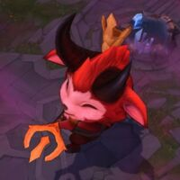

.jpg)

League of Legends jest to gra strategiczna typu MOBA (Multiplayer Online Battle Arena). Dwie drużyny składające się z 5 lub 3 różnych bohaterów stają naprzeciw siebie, zbierając złoto i doświadczenie, żeby potem wykorzystać swoją przewagę do zwycięstwa. Celem gry jest zniszczenie najważniejszego punktu w bazie przeciwnika - Nexusa. Można to osiągnąć, przebijając się przez kolejne fortyfikacje wroga lub poprzez wymuszenie poddania się. League of legends wyróżniają na tle konkurencji nieprzerwane aktualizacje, dzięki którym gra nigdy nie traci na świeżości. Oprócz tego w grze jest do wyboru ponad 140 bohaterów, a ich pula wciąż się rozszerza - czy to poprzez dodawanie nowych, czy odświeżanie starych. Każdy nowy gracz odnajdzie dla siebie wymarzonego herosa, z którym najbardziej zidentyfikuje swój styl gry.
W trakcie rozgrywki należy uważać na wiele czynników, takich jak np. przejrzystość mapy, , rozmieszczenie przeciwników, jak i osiąganie pomniejszych celów, pokroju Smoka Żywiołów czy Barona. Zdobywanie przewagi w złocie jest często kluczem do sukcesu. League of Legends podzielone jest na trzy mapy: Summoner's Rift(5v5), Twisted Treeline(3v3) oraz Howling Abyss(ARAM), z czego to na tej pierwszej rozgrywane są największe turnieje na międzynarodowym poziomie. League of Legends to gra Free2Play, która oparta jest na mikropłatnościach. Pobranie i użytkowanie gry jest w pełni darmowe. Wszystkich dostępnych w grze bohaterów oraz strony na runy można nabyć za punkty NE (Niebieska esencja), które każdy z graczy otrzymuje za wszelkiego rodzaju aktywności w grze - zdobywanie kolejnych poziomów, wykonywanie tymczasowych misji, czy poprzez system honoru .Za prawdziwą gotówkę można kupić RP (Riot Points), które pozwalają na odblokowanie dodatkowych skórek do postaci, skórek do totemów, jak i emotek wyświetlanych w grze. Wszelkie zakupy za RP mają jedynie wartość wizualną i nie wpływają w żaden sposób na statystyki postaci. Jedyną przewagą dla "bogatszego" gracza jest możliwość szybszego zakupu interesujących go herosów czy dopalaczy do PD. Gra na szczęście jest na tyle wyważona, że nie trzeba inwestować w nią żadnych pieniędzy, żeby czerpać z niej przyjemność.
Dzięki swojej atrakcyjności i mechanice League of Legends szybko stało się najpopularniejszą grą e-sportową na świecie i zrzesza miliony graczy na całym globie. Riot Games nieustannie wspiera profesjonalnie rozgrywki na każdym poziomie - od międzynarodowych lig LCS, LEC czy LPL, po bardziej lokalne, pokroju polskiej Ultraligi. Studio nawiązuje również współprace z najpopularniejszymi Streamerami i Youtuberami z całego globu, przyznając im dodatkowe profity i skórki do rozdania, a tym bliżej siedziby oferując testowanie nowej i eksperymentalnej zawartości, długo przed premierą dla oficjalnych serwerów.